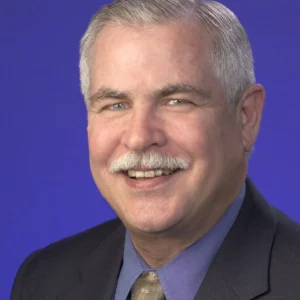

Kurt Petersen Abstract
Creating the Future with MEMS
Kurt Petersen, PhD Silicon Valley Band of Angels
Each of today’s engineering marvels, such as airplanes, cars, computers, cell phones, skyscrapers, cruise ships, and the ISS, which many of us take for granted, are only made possible by many, many layers of almost unbelievably complicated technologies. Every year, each one of these technologies (metal-working, plastics, electronics, packaging, automation, assembly, sensors, software, etc) is slightly improved to perform better, to become more reliable, to get smaller, or to get cheaper. Nowhere, of course, has this been more evident than for integrated circuits, which has followed
Moore’s law (the number of transistors on a chip will double every two years with minimal rise in cost) for over 50 years. MEMS, a subset of integrated circuit technology, has not only improved in performance, size, reliability, and cost, over the years, but also, amazingly, in functionality. Almost every 2 years, a new MEMS product hits the market with a completely new and different functionality than previous devices. From pressure devices (1970’s and 1980’s), to ink jet nozzles (1990’s), to accelerometers (1990’s), to digital mirror displays (1990’s), to microphones (2000’s), to FBAR filters (2000’s), to gyroscopes (2000’s), to oscillators (2010’s), to speakers (2010’s), to ultrasonic imagers (2020’s), to mention just a few. Visionaries and entrepreneurs and academic researchers have pioneered the invention, development, and commercialization of these revolutionary products. This talk will focus on the continuous introduction of new MEMS products and functionalities over the years, the visionary MEMS pioneers who made this possible, and what this portends for the future of MEMS.
Creating the Future with MEMS
Kurt Petersen, PhD Silicon Valley Band of Angels
Each of today’s engineering marvels, such as airplanes, cars, computers, cell phones, skyscrapers, cruise ships, and the ISS, which many of us take for granted, are only made possible by many, many layers of almost unbelievably complicated technologies. Every year, each one of these technologies (metal-working, plastics, electronics, packaging, automation, assembly, sensors, software, etc) is slightly improved to perform better, to become more reliable, to get smaller, or to get cheaper. Nowhere, of course, has this been more evident than for integrated circuits, which has followed Moore’s law (the number of transistors on a chip will double every two years with minimal rise in cost) for over 50 years. MEMS, a subset of integrated circuit technology, has not only improved in performance, size, reliability, and cost, over the years, but also, amazingly, in functionality. Almost every 2 years, a new MEMS product hits the market with a completely new and different functionality than previous devices. From pressure devices (1970’s and 1980’s), to ink jet nozzles (1990’s), to accelerometers (1990’s), to digital mirror displays (1990’s), to microphones (2000’s), to FBAR filters (2000’s), to gyroscopes (2000’s), to oscillators (2010’s), to speakers (2010’s), to ultrasonic imagers (2020’s), to mention just a few. Visionaries and entrepreneurs and academic researchers have pioneered the invention, development, and commercialization of these revolutionary products. This talk will focus on the continuous introduction of new MEMS products and functionalities over the years, the visionary MEMS pioneers who made this possible, and what this portends for the future of MEMS.